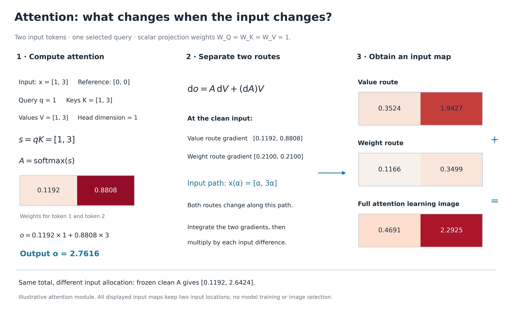

Figure 22
两个 token 的解析 attention 例子。固定选第一个 token 作 query，输入 [1,3]、参考 [0,0]，Q/K/V 标量投影权重均为 1，d_k=1。先算 qK、softmax 和输出，再将输入导数分为 A dV 与 (dA)V 两项。沿直线路径 [α,3α] 采用 Gauss–Legendre 数值积分，得到两个输入位置的完整归因。冻结 clean attention 时的图是另一个条件函数的归因，不等于完整路径中 A dV 那一项。本图是解析示意，不是已训练 ViT 的实测结果。
